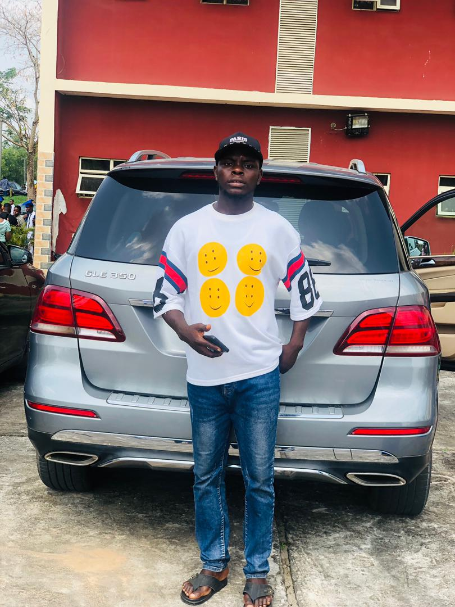

Chemical Engineering Technology student at the University of Calabar, student leader and young professional passionate about engineering, leadership, academic growth and community development.

I am Endah Elijah Kundushima, a Chemical Engineering Technology student at the University of Calabar. My interests include engineering, research, leadership, youth empowerment and community development. I believe education and responsible leadership can create meaningful opportunities for young people and communities.
Serving as President of the National Association of Obanliku Students, University of Calabar.
Previous service includes Director of Information within the NAOS University of Calabar structure.
Active interest in chemical engineering, technical development, academic support and professional growth.
Chemical Engineering Technology
Developing knowledge in chemical engineering, process operations, instrumentation, renewable energy and related technical fields.
Secondary education and foundation for continued academic development.
Early education in Yadoo, Becheve Ward, Obanliku.
Process engineering, laboratory work and technical problem-solving.
Academic research and practical engineering projects with real-world applications.
Education, leadership, empowerment and initiatives that support students and young people.
For professional, academic or leadership-related communication, connect with Endah Elijah Kundushima through his verified social profiles or contact details.
Endah Elijah Kundushima
University of Calabar